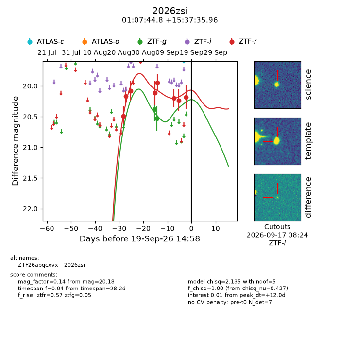
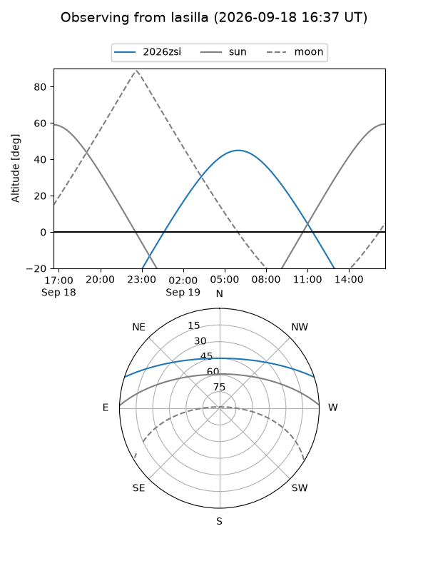
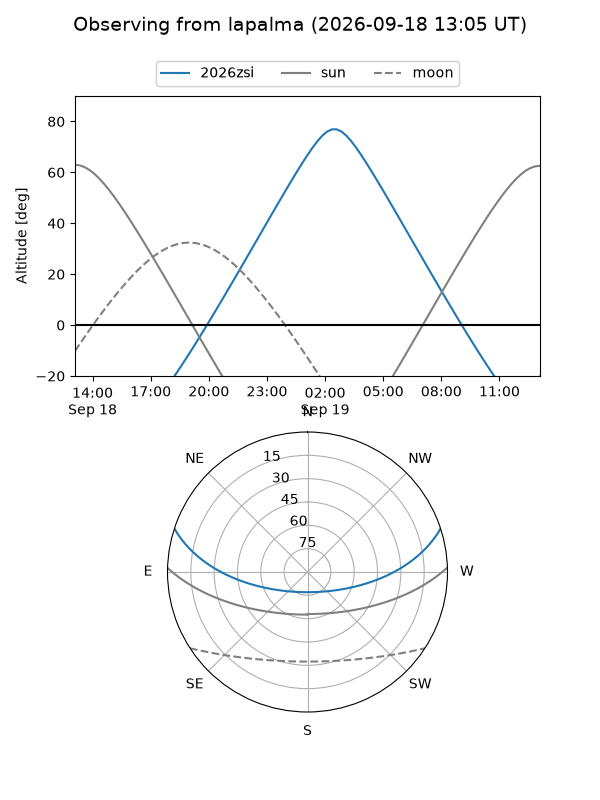
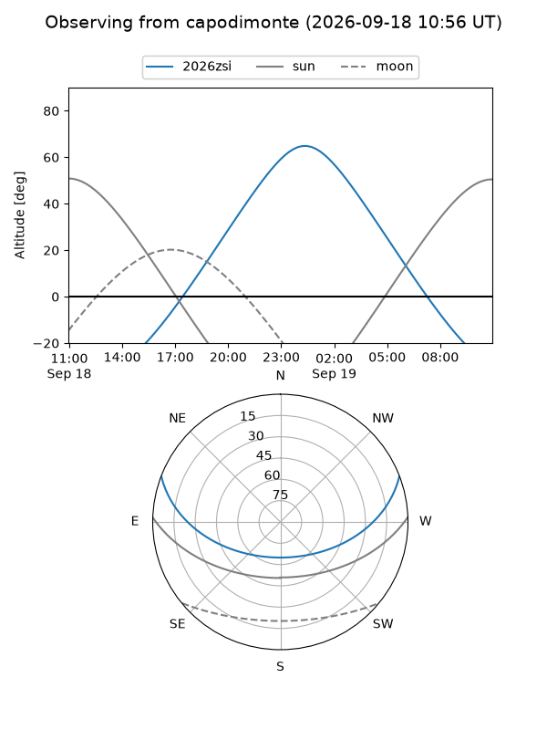
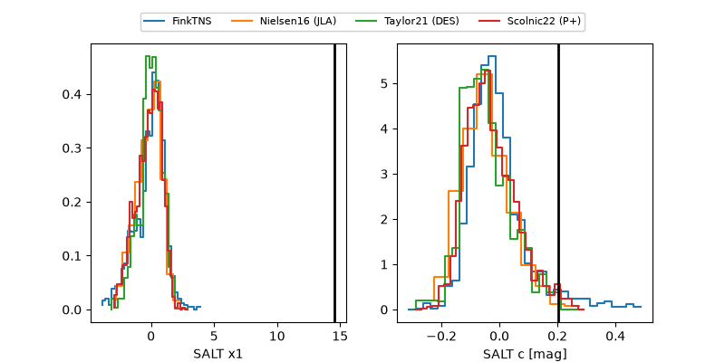

2026zsi
Target 2026zsi at 2026-09-19 15:00
Aliases and brokers:
FINK-ZTF: ztf.fink-portal.org/ZTF26abqcxvx
Lasair-ZTF: lasair-ztf.lsst.ac.uk/objects/ZTF26abqcxvx
ALeRCE-ZTF: alerce.online/object/ZTF26abqcxvx
YSE-PZ: ziggy.ucolick.org/yse/transient_detail/2026zsi
TNS name: wis-tns.org/object/2026zsi
Direct TNS query: direct search
alt names
ZTF26abqcxvx (ztf,fink_ztf)
2026zsi (tns,yse)
Coordinates:
equatorial (ra, dec) = 16.9366,+15.62665
equatorial (HMS+DMS) = 01:07:44.78,+15:37:35.96
galactic (l, b) = (128.7007,-47.06234)
Flags:
TNS type: nan
peak dt: +12.0
Photometry:
last ztfg=20.53, ztfr=20.18
2 ztfg, 8 ztfr detections
Lightcurve

Visibility



Additional plots
